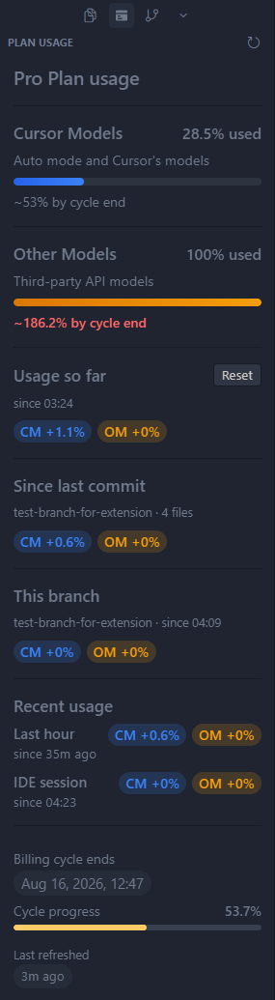
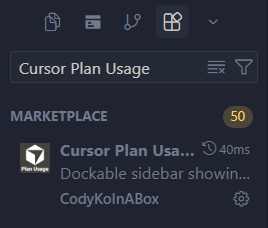

Always on
At a glance
- Cursor Models and Other Models meters, with the projected end-of-cycle percent
- Status bar chip:
CM n% · OM n% - Billing cycle progress and reset time
How much of your Cursor plan is gone?
Live Cursor Models and Other Models meters in your sidebar and status bar, with the same numbers at the end of the cycle. Git-aware windows show what a commit or a branch cost you.

Captured with Rustshot
Features
The top of the sidebar answers one question: how much have I used. The rest is there when you want it.
Always on
CM n% · OM n%Git-aware
main and
restores when you return
Heads-up
Below the meters
Command palette
Type Plan Usage to see them all.
| Command | What it does |
|---|---|
Plan Usage: Focus |
Open the sidebar |
Plan Usage: Refresh |
Force a usage refresh now |
Plan Usage: Export Usage (CSV) |
Save the daily history as a CSV file |
Plan Usage: Copy Diagnostics |
Copy a redacted report for bug reports |
Plan Usage: Set Session Token |
Override Cursor's local token with your own JWT |
Plan Usage: Clear Session Token |
Remove the override and use Cursor's local token again |
Install
Extensions tab, search, install. That’s it.

Also on Open VSX.
Found a bug or have an idea? Run
Plan Usage: Copy Diagnostics and paste the report into
the issue. Open it on
GitHub.
MIT licensed and fully readable on GitHub. Audit it, fork it, or send a pull request.
Your access token stays on your machine and is never written to disk by the extension. No telemetry. The only network call is the usage request to Cursor’s API.
Smart refresh pauses when Cursor is unfocused and avoids unnecessary background work.
Lives in the sidebar and status bar, using Cursor’s existing UI instead of opening another dashboard.